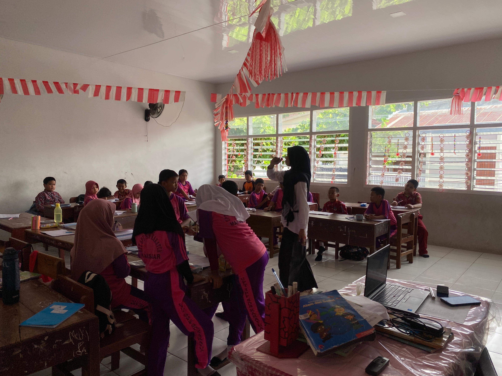
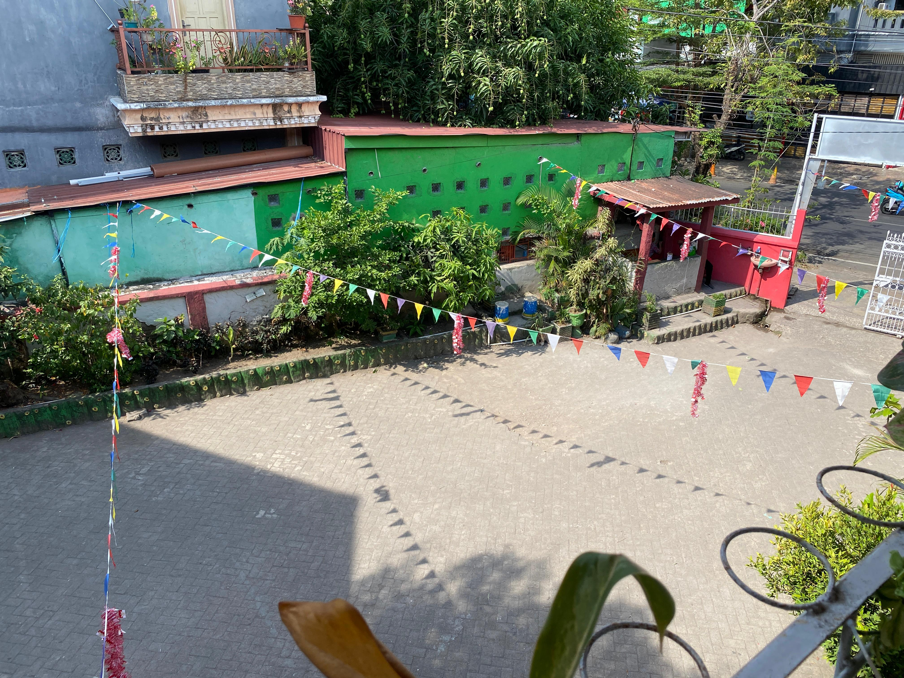
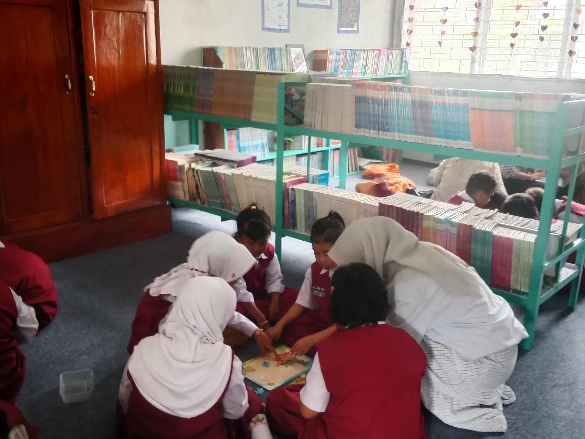

Profil Sekolah
Visi dan Misi
Visi: Mewujudkan Warga Sekolah Yang Unggul Imtaq, Iptek, Dan Pengembangan Kreativitas Diri Serta Berperilaku Peduli Dan Sadar Lingkungan.
Misi:
- Melaksanakan pembelajaran dan bimbingan secara efektif dan inovatif berdasarkan IMTAQ dan IPTEK yang ada.
- Menumbuhkan kreativitas diri terhadap budaya bangsa melalui kegiatan ekstra kurikuler.
- Membiasakan hidup sehat dan peduli untuk memelihara kelangsungan sekolah dan masyarakat sebagai bagian dari kehidupan.
- Menumbuhkan dan melaksanakan pelestarian lingkungan, mencegah terjadinya pencemaran serta peduli terhadap lingkungan.
- Membudayakan pemilahan sampah yang berbeda dan sampah plastik sebagai upaya perlindungan lingkungan terhadap kerusakan.
- Mengembangkan sekolah yang rindang, indah, bersih dan asri sebagai upaya pelestarian dan pengelolaan lingkungan hidup yang baik.
Fasilitas
- Ruang Kelas
 - Lapangan
 - Perpustakaan
